← 返回阅读库 · 原论文目录
论文讲解阅读文档 · 新模型 · v084
Aggregating Nested Transformers[2105.12723]
视频时长 00:07:40；讲解文字 3,875 字符；提取讲解画面 14 张。按视频原顺序阅读，每段文字保留时间戳。
文字来自整段视频的自动语音转写，按自然停顿分段，并与 PPT / 论文页面 / 演示画面对齐。未将讲解压缩为摘要；术语、数字和口述公式请结合画面及原论文核对。 阅读稿已校正规范部分明确术语误识别；原始逐字稿和每处修改记录另行保留。
讲解画面为源视频截图（640×360），不是可编辑 PPT 文件。全片按每秒 2 帧扫描内容变化，逐步展开页保留；连续动画保留代表画面。清晰度受源视频限制。
下载完整资料包 · 含离线 HTML、PDF、Word、全部 PPT 画面和字幕。
原论文与材料
Nested Hierarchical Transformer: Towards Accurate, Data-Efficient and Interpretable Visual Understanding · 下载完整 PDF（15 页）
按时间阅读
00:00:00–00:00:17 · 画面 001
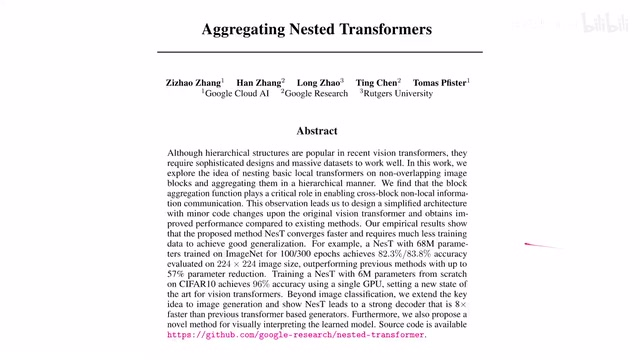
00:00:00–00:00:17 · 画面 001大家好啊今天我们来快速数一篇论文 Aggregating Nested Transformers 拿到这个摘要你看见它是一个 Hierarchical 的结构 Transformer Hierarchical 第一反应这个 Swin Transformer、Multi-scale Transformer 等等等等对吧这些都刻进 DNA 里了那么我们来看这篇作者是怎么实现的吧好吧我们先看到这个插图啊发现还是一开始先把这个图像划分成小的 block 标准的这个 Vision Transformer 的操作
00:00:17–00:00:21 · 画面 002
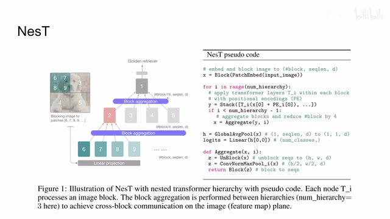
00:00:17–00:00:21 · 画面 00200:00:21–00:00:22 · 画面 003
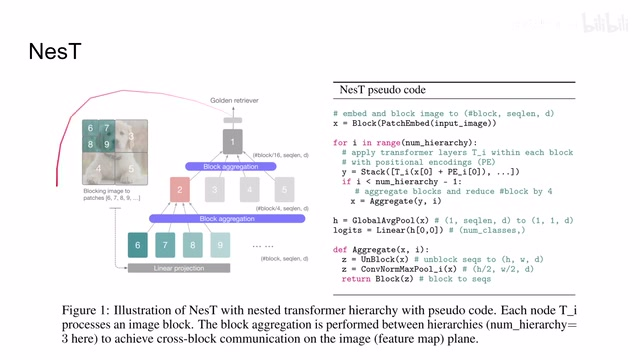
00:00:21–00:00:22 · 画面 00300:00:22–00:02:12 · 画面 004
00:00:22–00:02:12 · 画面 004那么与 Swin Transformer 相同呢也是 block 之间他们相互做 attention 然后呢这种大的这个分块之间呢是没有信息沟通的比如说呢这里这个 3 下面这个 block 下面它其实应该也是按照这个左边的尺寸应该也是分成四个小的这个 block 那么左边这个 6789 呢他们是相互沟通的做这个 self-attention 那 3 里面的这些四个小的 block 也是做这个 self-attention 相互做但是呢左边这个小的这个 block 呢跟右边这些小的 block 呢
他们呢是没有信息交互的那么随着我们的层级的提升呢这里呢组织安排了一个 block aggregation 这个时候呢我们才可以在不同的 block 之间把信息做一个交互也就是说我这个 6789 他们的这个 self attention 做完了过了几层 transformer 了然后呢他要开始跟周围其他的 block 来进行交互在这个交互的过程中呢同时呢我们还会把 block size 进一步压低也就是说呢在这一波这个 block aggregation 之后呢它既和周围的 block 交换了信息同时呢也把这些小的 block 组成了一个大的 block 那么经过这一通操作之后呢我们现在就只有 2345 这四个 block 那么他们之间呢就可以相互做这个 self attention 然后呢再过一个 block aggregation 那么现在就只剩下一个大的 block 了最后呢把我们的这个 image classification head 给它提出来
放到我们下游的这个 classifier 里面就可以了那么这边呢来看到作者提供的 pseudo-code 对吧你可以看到这是明显一个 hierarchical 的结构一开始呢还是画成非常小的这个 block 然后呢做 patch embedding 这里呢就是 linear projection 一个 MLP 或者是一个 linear layer 直接把所有的像素呢给它映射到一个 vector 上面然后呢对于每一个层级我们分别做 self-attention 你可以看到呢对每四个小的 block 它做了一个 transformer
00:02:12–00:02:13 · 画面 005
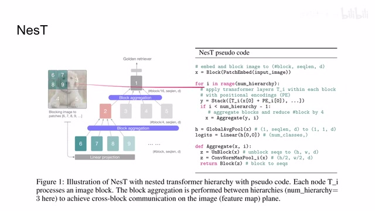
00:02:12–00:02:13 · 画面 00500:02:13–00:02:39 · 画面 006
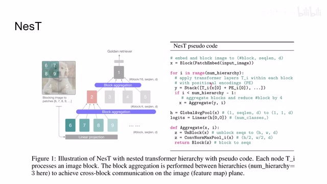
00:02:13–00:02:39 · 画面 006同时加上这个 positional encoding 那么组成了这样一个结果那么这个 3 下面它也有 4 个小的 block 也做一些结果接在后面这样串接起来这样子呢还是 6789 有交互但是它不跟其他的小的 block 交互那么这样一层运行完呢我们输入多少个 block 输出还是多少个 block 但是每一个 block 呢这应该叫 patch 才是符合这个 vision transformer 里面的说法它只能包含自己的这么 4 个 patch 来做 self-attention
00:02:39–00:02:41 · 画面 007
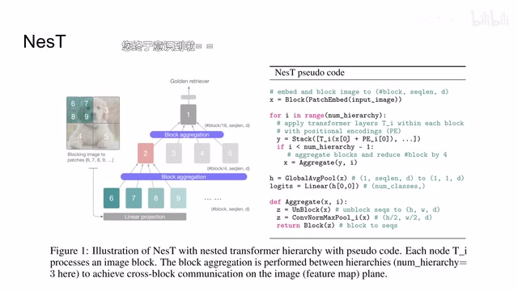
00:02:39–00:02:41 · 画面 00700:02:41–00:03:00 · 画面 008
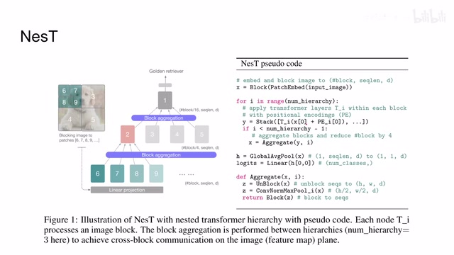
00:02:41–00:03:00 · 画面 008那么这个呢就跟 Swin Transformer 的实现呢是一样的只不过后面呢 Swin Transformer 呢是挪动了这个 block 的划分的方法这里呢直接就做 aggregation 那么这里的 aggregation 有什么呢你可以看到首先是 unblockunblock 的意思就是我把这些 vector 嘛给它再变形回一个图片的形式就组成这个图像的形状然后呢做卷积 layer normalization 然后 max pooling
00:03:00–00:03:01 · 画面 009
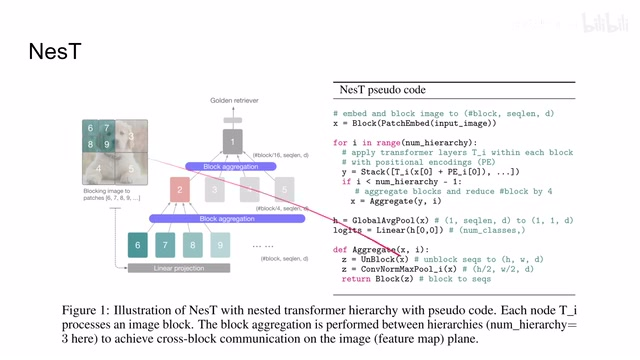
00:03:00–00:03:01 · 画面 00900:03:01–00:03:44 · 画面 010
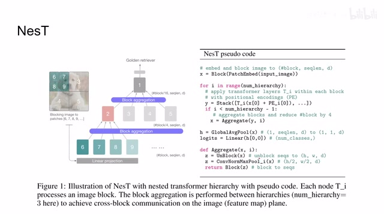
00:03:01–00:03:44 · 画面 010这部 max pooling 就把我们原来比如说用 h 乘 w 这样一个尺寸的图像变成了 2 分之 h2 分之 w 然后再做 block 这样子我们的图像的长度和宽度都会变为原来的一半我们的 block 的数量变为原来的 1⁴这样子我们就上升到了更高的一个层级上也就是这里的 2345 这个 level 那么在这个 level 我们继续做 self-attention 这样一次次循环最后得到的结果呢做 global average pooling 然后呢过 linear projection 就可以了那么当然就这个 aggregation 呢作者在这个设计的时候呢存在两种方案进行了讨论第一种呢叫做 block aggregation 就是一开始我们看到我们的这个红色的这个 block 绿色的这个 block 他们是相互做 self-attention 不跟其他颜色的 block 做 self-attention 那么在做这个 block aggregation 的时候呢我们有一种方案就是做这个 block plane 的 aggregation 你可以看到呢还是
00:03:44–00:05:29 · 画面 011
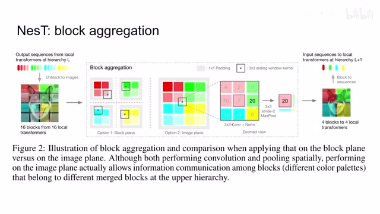
00:03:44–00:05:29 · 画面 011红色的这 4 个 patch 给它加上边缘然后做 convolution 做 layer normalization 然后做 max pooling 每一个他们分别做相互内部传递信息那么第二种设计就显得更加开放一点就是我把这每个 block 都给它融合到一起变成一整张图像然后整体的做 convolution layer normalization 然后加上 max pooling 然后输出的结果再给它拆分成细的 block那么第二种方法的优势对比第一种方法的优势是显而易见的因为在 block aggregation 的过程中是这些 patch 唯一的仅存的相互交流的机会就是红色和绿色红色和蓝色这些 patch 他们相互交流的机会如果你这时候你还把他们分开了他们就彻底没有交流了这显然不太合适所以最终作者也是采取了这种方案也就是在 image plane 里面做 aggregation
那么做 aggregation 之后因为我们有 max pooling 嘛原来这四个小的 block 呢就变成了一个大的 block 然后呢就继续做 transformer 就可以了那么这里有一点呢需要注意就是我们无论是红的这四个 patch 之间他们做 self-attention 还是绿的他们四个之间做 self-attention 只要他们处于同一个层次同一个尺度上他们用的这个 transformer 的这个参数啊都是相互 share 的就说他们都是用了一套这个 transformer 参数当然不同尺度的用的参数是不一样的
那么以上就是本文提出的 NesT encoder 到这里看来它平平无奇那么我们为什么还会介绍这个论文是因为它包含了两个还算有意思的特性那么第一个就是你可以把这个 transformer encoder 当成一个 generator 你想它的结构是一张图像输进来自理向下的最后变成一个 vector 但是你完全可以把它反过来误一个 noisy 的 vector 然后让它生成一幅图像
00:05:29–00:07:17 · 画面 012
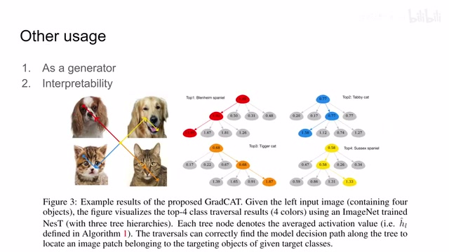
00:05:29–00:07:17 · 画面 012那么这个过程中呢你想它经过 transformer 的 layer 的时候呢它是不改变图像的尺寸的只有在 blockaggregation 的时候呢把图像的尺寸变成了原来的一半那么你把这个 encoder 当成 generator 的时候呢你只需要把它这个 aggregation 这个部分呢变成一个 upsampling 或者是其他的这个 deconvolution 这样的方法那么你就可以完完全全的把这一个 encoder 的结构给它很方便的变成一个 decoder 的结构变成一个 generator
然后这个呢是本文这个结构的第一个用途，那么第二点呢在于这个 interpretability 啊，也就是可解释性，简单来说就是啊，我对这一个图像进来，为什么他就给他分类成猫啊，分类成狗了对不对？那么这里呢我们看到他把是四幅图像正好呢拼成一整张图像，送到这个 transformer 里面，然后然后 transformer 呢给出了四个结果，那假如说呢他是这个第一个结果呢，我们发现哎他可以找到是谁激活呢是最厉害的那么顺着这个 block 它继续往下找，这个 block 下面的哪一个小的 block 呢是激活最厉害的结果，你看这个红色路径呢就指到了左上角这个 block，那么再看这二种结果呢也是我从一个大的 block 锁定一下是下面哪个 block 给我这么高的激活对吧？然后再往下锁定，那么最后呢你可以看到它蓝色的这个路径也是准确的找到了它的目标这个物体，那么因为这个结构设计的非常直观，所以呢就很方便的帮我们找到了是哪一个部分激活了我们最后模型的判断
一个很有意思的用途可以看个乐，那么最后是作者汇报一些主要结果，用一个很庞大的模型参数量比 Swin Transformer 小，但是计算量要比 Swin Transformer 大，然后一些漂亮的数字，总的来说这个系列的节目还是推荐你去看一下原文，了解一下它实验的各种配置，它更多的汇报一些精确的实验结果，那么这里我们就不详细的介绍了，好的，感谢您的收看，再见
00:07:17–00:07:40 · 画面 013
00:07:17–00:07:40 · 画面 01300:07:40–00:07:40 · 画面 014
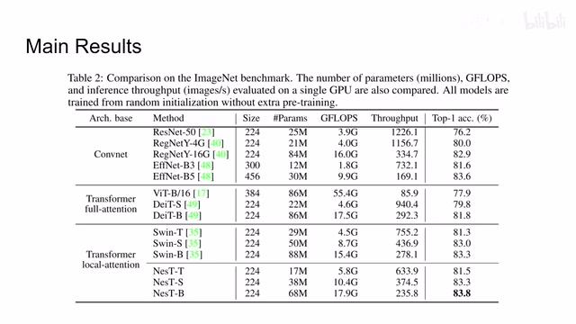
00:07:40–00:07:40 · 画面 014转写与来源说明 · 0 个自动复核提示
保留 17 个原始语音片段，0 个片段触发自动复核提示。提示仅用于定位可能的术语、重复或识别问题，不等于已确认错误。
讲解画面为源视频截图（640×360），不是可编辑 PPT 文件。全片按每秒 2 帧扫描内容变化，逐步展开页保留；连续动画保留代表画面。清晰度受源视频限制。
原视频：paper/合集_2026-10-16_新模型/[论文速览]Aggregating Nested Transformers[2105.12723].mp4
SHA-256：e0755cd4e6901bbf44b3e5d48417b02f87f91f30a494b58899f17de8d2d921c9
全文按视频语音与画面制作。原论文可从上方链接下载；完整资料包保留全文、原始逐字稿、字幕和校对记录。